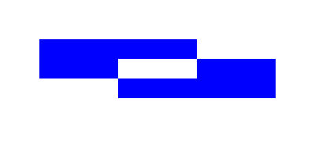

FillPath()
Syntax
FillPath([Flags])Description
Fill all closed figures in the current vector drawing path with color from the drawing source.
By default, the path is reset after calling this function. This can be prevented with the appropriate flags.
Parameters
Flags (optional) Can be one of the following values: #PB_Path_Default : No special behavior (default value) #PB_Path_Preserve : Don't reset the path after this function
Return value
None.
Remarks
If the path has overlapping figures, it is filled in an odd/even fashion. Areas enclosed in an odd number of borders are filled, while areas enclosed in an even number of borders are not filled. That is, everything with in the outer border is filed, while enclosed figures are not filled. If the enclosed figure again contains another figure, that 3rd figure will be filled again, and so on.
Example
If OpenWindow(0, 0, 0, 400, 200, "VectorDrawing", #PB_Window_SystemMenu | #PB_Window_ScreenCentered) CanvasGadget(0, 0, 0, 400, 200) If StartVectorDrawing(CanvasVectorOutput(0)) AddPathBox(50, 50, 200, 50) AddPathBox(150, 75, 200, 50) VectorSourceColor(RGBA(0, 0, 255, 255)) FillPath() StopVectorDrawing() EndIf Repeat Event = WaitWindowEvent() Until Event = #PB_Event_CloseWindow EndIf
See Also
StrokePath(), DotPath(), DashPath(), CustomDashPath(), ResetPath(), ClipPath()
Supported OS
All